Início de Plantão
- Assumindo o plantão
- Logando no Computador
- Logando no Google
- Contagem de Cartões
- Informar o Status da Eclusa
- Abrir Livro de Ocorrências
Assumindo o plantão
Ao assumir o plantão o Controlador deverá fazer uma breve inspeção nos equipamentos e ferramentas de trabalho tais como as condições gerais do ambiente antes de iniciar o turno.
Se alguma anomalia for identificada o controlador deverá comunicar imediatamente ao vigilante líder e registrar em livro de ocorrências.
Logando no Computador
Reinicie o computardor e informe seu Login e Senha de acesso conforme tela acima.
Logando no Google
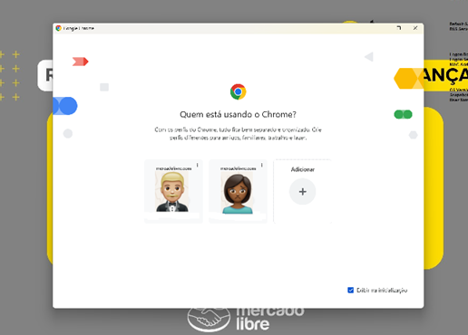
Selecione o seu usuário na tela acima e em seguida abra o Aplicativo da Portaria (PORTARIA) localizado na barra de tarefas do Google.
Na sequência clique em seu login novamente que o Google irá solicitar a sua senha novamente e irá solicitar a autenticação no sistema conforme sequência de telas abaixo.


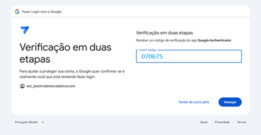
Pronto! Você já está logado no sistema.
Contagem dos Cartões de Acesso da Portaria
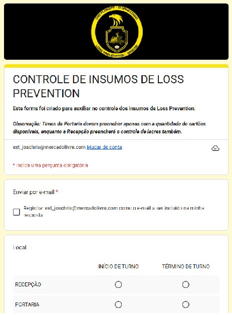
O próximo passo é efetuar a contagem dos cartões para dar início ao plantão e preencher o formulário de insumos conforme a tela acima clicando no link abaixo.
VOLTARInformar o Status de Operação das Eclusas
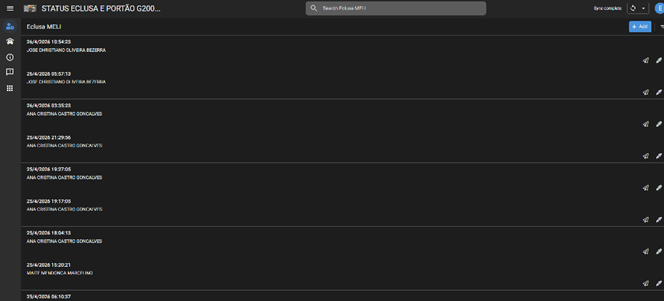
Informe as condições dos portões, cancelas e garras de tigre de cada eclusa clicando no aplicativo abaixo.
Publique o resultado do seu informe no grupo NOVA PORTARIA do whatsapp.
Abertura do Livro de Ocorrências
Em seguida, abra o livro de ocorrências anotando as informações relevantes para o setor, bem como as anomalias encontradas na vistoria inicial, seguindo o modelo abaixo:
G4S, 24 de Abril de 2026
Mercado Livre, Governador Celso Ramos - SC
Equipe: Charlie - Horário: 6h às 18h
Líder: Charlene
Controladores: Christiano
- Assumimos o plantão com todos os portões em 5 pontos e todas as ferramentas de trabalho no QTH (1 HT e 2 hands no QTH).
- Massiva conferida pela Equipe Bravo.
VOLTAR🚗 Acesso de Veículos
Entrada e Saída de Veículos
O acesso de veículos ao site ocorre exclusivamente pelas eclusas do G300, com exceção das carretas do Full, que utilizam o acesso do G200 para operações de carga e descarga.
Tipos de acesso pelas eclusas do G300:
- Prestador de Serviço
- Visitante
- Colaborador Meli
- Seller
- Correios
- Entrega de Insumos
- Entrega de Restaurante
- Entrega de Manutenção
⚠️ Atenção:
Não é permitido o acesso de Sellers com veículos:
- Basculante
- Com plataforma
- Com carroceria aberta
Esses veículos são permitidos apenas para outros perfis, pois não realizam descarga em doca.
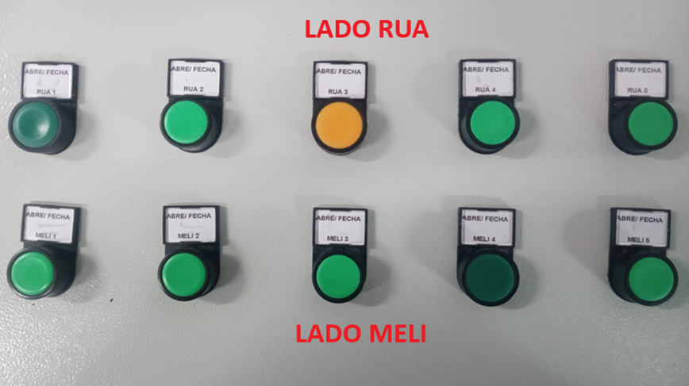
🚨 CENTRAL DE COMANDO
Controle de Eclusas
🔒 REGRA OBRIGATÓRIA
NUNCA abrir os dois portões da mesma eclusa ao mesmo tempo.
Se um portão estiver ABERTO, o outro deve permanecer FECHADO.
🚌 EXCEÇÃO – SAÍDA DE FRETADOS
É permitida a abertura simultânea dos portões para agilizar o fluxo de saída.
⚠️ ATENÇÃO
O descumprimento desta regra compromete a segurança do local.
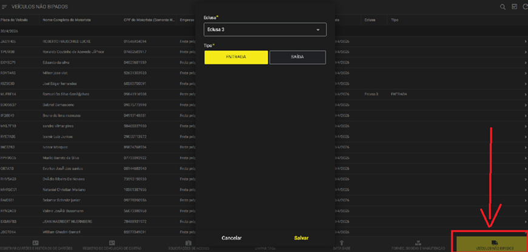
🚗 Veículos Não Bipados
Veículos não bipados são aqueles que não possuem liberação automática de acesso por meio de identificação eletrônica.
Nesses casos, é obrigatória a atuação da equipe da portaria para realizar a liberação manual, seguindo os procedimentos de segurança estabelecidos.
Para dar entrada ou saída nos veículos abra o link abaixo
Acessar APP PORTARIA VEÍCULOS NÃO BIPADOSClique na lupa no canto superior direito do aplicativo e efetue a pesquise pela placa do veículo ou cpf/nome do motorista.
Se o veículo for localizado é só clicar no registro correspondente, informar a Eclusa que ele está e indicar se está ENTRANDO ou SAINDO. Agora é só salvar.
Se o veículo for localizado, mas o seu cadastro ainda estiver PENDENTE o veículo deverá se retirar da Eclusa, entrar em contato com o seu anfitrião e solicitar a APROVAÇÃO do seu cadastro.
Se o veículo NÃO for localizado, ele não poderá acessar.
⚠️ Atenção:
Se o motorista for localizado, estiver APROVADO, porém não houver placa inserida em seu cadastro ele só poderá acessar à pé pelos torniquetes.
Nenhum veículo pode acessar o site sem a devida validação e autorização prévia.
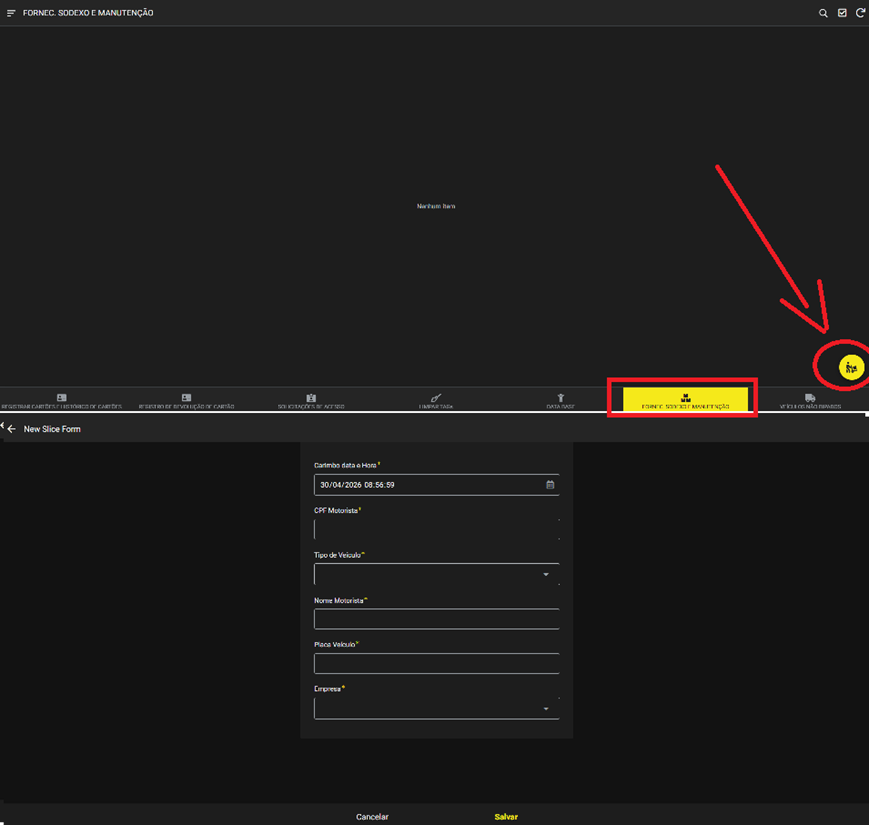
🚗 Fornecedores Frequentes do Restaurante / Manutenção
Veículos de fornecedores do restaurante ou da manutenção que possuam frequência autorizada pelo setor de Loss Prevention podem acessar o site mesmo sem cadastro previamente aprovado.
Nesses casos, o cadastro do motorista, do veículo e dos ajudantes deve ser realizado no momento da chegada.
Para registrar a entrada ou saída desses veículos, acesse o link abaixo:
Acessar APP PORTARIA – VEÍCULOS DO RESTAURANTE / MANUTENÇÃOVerifique na etiqueta fixada na mesa se o fornecedor está autorizado e se está no dia correto para acesso.
Caso todas as informações estejam corretas, clique no círculo amarelo com o ícone de carrinho de entregas e preencha os dados do motorista e do veículo.
Em seguida, o aplicativo perguntará se há ajudantes para acesso. Caso positivo, preencha os dados e forneça um cartão de acesso para cada ajudante.
⚠️ Atenção:
Os ajudantes não poderão acessar embarcados no veículo. Eles devem utilizar o cartão de acesso para entrada pelo torniquete.
Acesso de Pedestres
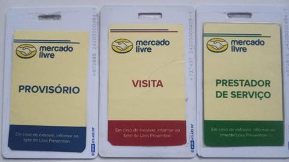
CONHECENDO OS CARTÕES DE ACESSO
Como podemos observar na imagem ao lado, trabalhamos com 3 tipos de cartões: PROVISÓRIO, VISITA E PRESTADOR DE SERVIÇO onde:
PROVISÓRIO: São os cartões destinados aos colaboradores Meli, Randstad e Adecco
VISITA: São os cartões destinados aos visitantes do Meli
PRESTADOR DE SERVIÇO: São os cartões destinado aos prestadores de serviço que estão trabalhando no Meli
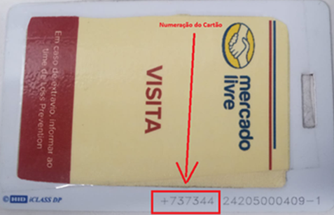
NUMERAÇÃO DO CARTÃO
Todo cartão tem sua identificação única que é a numeração que está localizado no destaque da imagem ao lado
Portanto nunca vai existir a mesma numeração para dois cartões diferentes
Registrando um Cartão de Acesso
Para registrar um cartão de acesso no sistema, é fundamental seguir as regras básicas abaixo:
Todo indivíduo deve, obrigatoriamente, apresentar um documento oficial com foto. Não é permitido aceitar xerox ou fotos do documento exibidas pelo smartphone.
São aceitos documentos digitais emitidos por órgãos oficiais, como:
- Identidade digital;
- RG disponível no portal Gov.br;
- CNH digital;
- e-Título com biometria coletada.
Atenção: Caso o e-Título não possua biometria cadastrada, ele não deve ser aceito.
A Carteira de Trabalho digital não é aceita como documento oficial, pois a foto pode ser alterada a qualquer momento. Para esse caso, somente a versão física é válida.
ATENÇÃO: Exclusivamente para colaboradores MELI, é permitido utilizar o crachá MELI como identificação. Não é permitido aceitar crachás de outras empresas, visitantes ou prestadores de serviço.
Após a validação do documento, o próximo passo é consultar no aplicativo da Portaria se o indivíduo possui acesso autorizado no sistema clicando no link abaixo.
Para Prestadores de Serviços e Visitantes
Para os tipos de indivíduos acima, devemos considerar duas regras básicas: se o indivíduo for Prestador de Serviço ou Visitante, será necessário verificar se ele possui liberação concedida na opção ‘Solicitação de Acesso’, conforme ilustrado na imagem abaixo
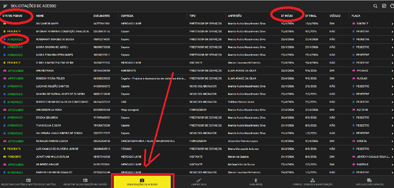
Clique na lupa no canto superior direito do aplicativo e pesquise pelo cpf ou pelo nome do indivíduo.
Ao localizar o indivíduo no aplicatvio ATENTAR-SE para os seguintes campos: STATUS PEDIDO e DT INI
O indivíduo deverá estar APROVADO e com a DATA INICIAL vigente para o registro do cartão

Se os requisitos acima estiverem de acordo, podemos iniciar o registro do cartão. Clique no nome do indivíduo no aplicativo e preencha os seguintes campos:
CARTÃO: informe a numeração do cartão que será fornecido ao indivíduo.
TIPO CARTÃO: selecione o tipo de cartão que está sendo entregue.
FUNC_G4S: selecione o seu nome para registrar que o cartão foi entregue por você.
Em seguida, clique em Salvar.
Pronto! O cartão está devidamente registrado.
Entregue o cartão ao indivíduo juntamente com o seu documento.
Para Colaboradores Meli, Randstad e Adecco
Para os representantes acima, devemos consultar se o colaborador está ativo na opção "Database" e se está portando seu crachá com o cartão de acesso ou não.
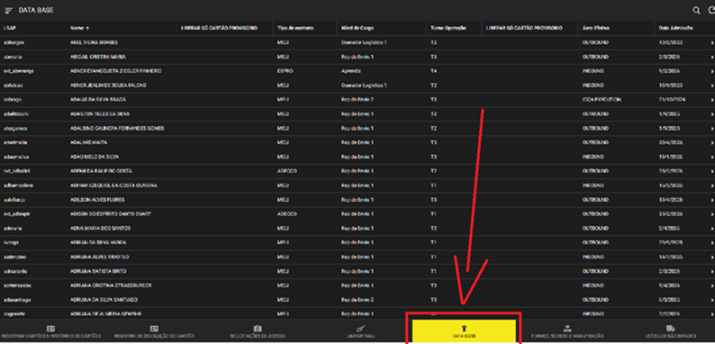
Clique na lupa no canto superior direito do aplicativo e pesquise pelo nome do representante.
Se o nome do representante apareceu nessa pesquisa é porque ele está ativo no database e pode ser registrado um cartão provisório para ele preenchendo os campos a seguir.
⚠️ ATENÇÃO
Caso o representante estiver portando seu cartão de acesso, mesmo que ele esteja ativo no database o controlador deverá imediatamente consultar a recepção se o representante pode acessar
Não liberar nenhum cartão enquanto a recepção não retornar positivamente.
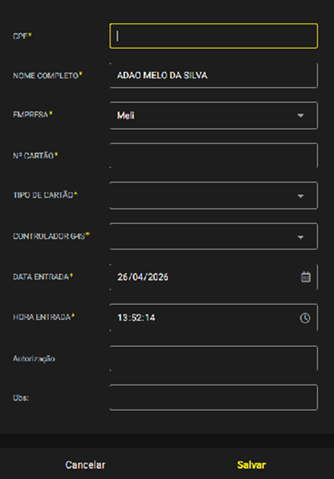
CPF: informe o cpf do representante.
Nº CARTÃO: informe a numeração do cartão que será fornecido ao representante.
TIPO DE CARTÃO: selecione o tipo de cartão que está sendo entregue.
CONTROLADOR G4S: selecione o seu nome para registrar que o cartão foi entregue por você.
Em seguida, clique em Salvar.
Pronto! O cartão está devidamente registrado.
Entregue o cartão ao representante juntamente com o seu documento.
VOLTARBaixa de Cartão de Acesso
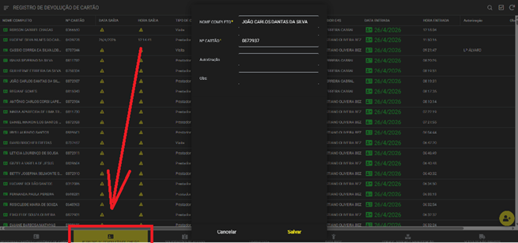
Conforme figura acima, abra o Aplicativo da Portaria no link abaixo.
Acessar APP PORTARIAClique na lupa no canto superior direito do aplicativo e localize o cartão pela sua numeração.
Ao localizar o cartão clique nas ocorrências desse cartão que estão em aberto e em seguida clique em salvar.
ATENÇÃO! Caso não encontre nenhuma ocorrência em aberto para o cartão consultado, verificar se a numeração do cartão se inicia com o algarismo ZERO, se estiver com ZERO apague esse algarismo da frente dos números e procure novamente. Se ainda assim não encontrares nenhuma ocorrência você deverá consultar se existe ocorrência em aberto na PLANILHA DA RECEPÇÃO clicando no link abaixo. Através das teclas de atalho CTRL+F digite o número do cartão a ser localizado na planilha da recepção e verifique a última ocorrência desse cartão na planilha. Preencha os campos em vermelho HORA SAÍDA e DATA SAÍDA para efetuar a baixa.
Acessar Planilha da RecepçãoPronto! O cartão já está baixado e já pode ser guardado e utilizado novamente.
IMPORTANTE – BLOQUEIO LENEL
- Verificar no APLICATIVO DA PORTARIA ou na PLANILHA DA RECEPÇÃO o campo Obs.
- Caso conste a informação "BLOQUEADO LENEL":
- Separar imediatamente o cartão.
- Solicitar o desbloqueio junto à recepção.
- Aguardar a confirmação da recepcionista.
- O cartão não deve ser reutilizado ou guardado antes da confirmação.
- Somente após a confirmação do desbloqueio pela recepção o cartão poderá ser liberado para uso novamente.
Baixa de Tag do Estacionamento
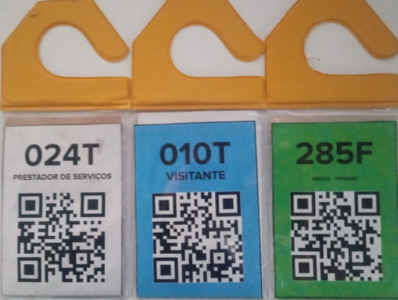
Existem 3 tipos de TAGs para serem limpas ao fim de cada plantão, BRANCA, AZUL e VERDE..
BRANCA - São as TAGs destinadas aos Prestadores de Serviços.
AZUL - São as TAGs destinadas aos Visitantes do Mercado Livre.
VERDE - São as TAGs destinadas aos Teceirizados que trabalham continuamente no Mercado Livre.
Limpando as TAGs.
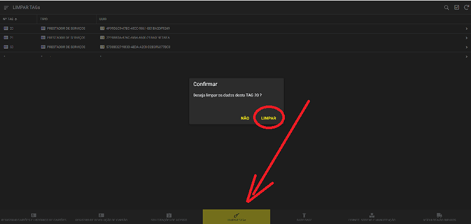
Conforme figura acima, abra o Aplicativo da Portaria no link abaixo.
Acessar APP PORTARIALocalize a TAG a ser baixada respeitando a numeração e a sua coloração, ao localizar clique em Limpar. Limpe todas as ocorrências que tiverem da mesma TAG.
Pronto! O TAG já está baixada e já pode ser utilizada novamente.
VOLTAR